Introducción a Python
Contents
Introducción a Python¶
¿Para qué aprender Python?¶
En esta serie de cuadernos de Jupyter hacemos una pequeña introducción al lenguage de programación Python. Los cuadernos disponibles son:
- Para qué aprender Python (este cuaderno)
- Variables y operaciones
- Textos
- Colecciones
- Control de ejecución
- Funciones
- Módulos
- Clases y objetos
Recomiendo estos recursos adicionales a quienes deseen profundizar en este tema:
McGrath, Mike (2016). Python in Easy Steps. In Easy Steps Limited.
Romero-Aguilar, Randall (2017). Python para economistas. Nota Económica Regionales No.93, diciembre. SECMCA.
El analista económico-financiero (blog) Los programas más usados por economistas. 4 de agosto 2016
Universidad de Alcalá (Master Finanzas, blog) Por qué un economista debería aprender a programar. 19 de abril 2018.
Sosa Escudero, Walter Peleados con los algoritmos: los economistas y su talón de Aquiles. (29 de octubre 2017)
El País La asignatura de programación se cuela en la licenciatura de Económicas. 25 de septiembre 2017
Acerca de Python¶
Python es…
libre – es software distribuible de código abierto
fácil de aprender – tiene una sintaxis de lenguaje simple
fácil de leer – no está atiborrada de signos de puntuación
fácil de manterner – es modular para simplicidad
“baterias incluidas” – provee una librería estándar grande para que sea fácil integrar con sus propios programas
interactivo – tiene una terminal para arreglar y probar fragmentos de código
portable – corre en una amplia variedad de plataformas de hardware y tiene la misma interface en todas las plataformas
interpretado – no se requiere compilar el código
alto nivel – tiene administración de memoria automática
extendible – permite agregar módulos de bajo nivel al intérprete para personalización
versátil – soporta tnato programs orientados a procesos como programación orientada a objetos (OOP)
flexible – puede crear porgrams de consolas, aplicaciones con ventanas GUI (Graphical User Interface), y código CGI (Common Gateway Interface) para procesar datos de la web
Python en las noticias¶
The Economist, julio de 2018¶
The language’s two main advantages are its simplicity and flexibility. Its straightforward syntax and use of indented spaces make it easy to learn, read and share. Its avid practitioners, known as Pythonistas, have uploaded 145,000 custom-built software packages to an online repository. These cover everything from game development to astronomy, and can be installed and inserted into a Python program in a matter of seconds. This versatility means that the Central Intelligence Agency has used it for hacking, Google for crawling webpages, Pixar for producing movies and Spotify for recommending songs. Some of the most popular packages harness “machine learning”, by crunching large quantities of data to pick out patterns that would otherwise be imperceptible.
Source: https://www.economist.com/graphic-detail/2018/07/26/python-is-becoming-the-worlds-most-popular-coding-language
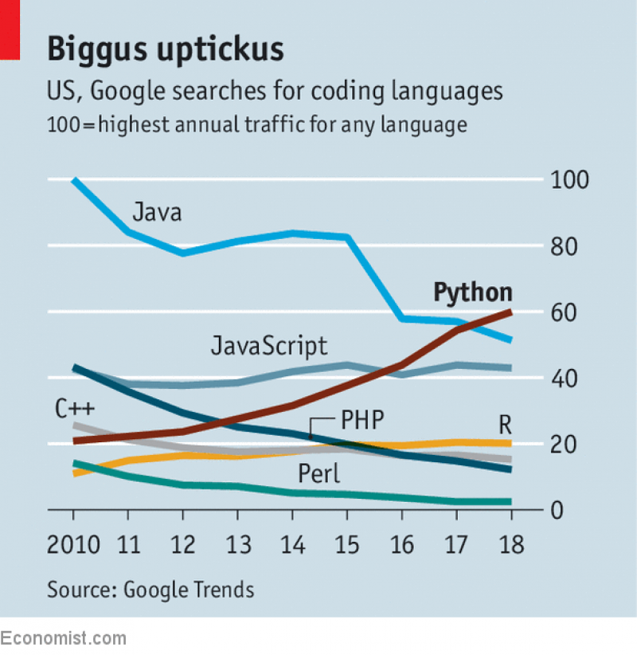
Python is not perfect. Other languages have more processing efficiency and specialised capabilities. C and C++ are “lower-level” options which give the user more control over what is happening within a computer’s processor. Java is popular for building large, complex applications. JavaScript is the language of choice for applications accessed via a web browser. Countless others have evolved for various purposes. But Python’s killer features—simple syntax that makes its code easy to learn and share, and its huge array of third-party packages—make it a good general-purpose language. Its versatility is shown by its range of users and uses.
For professions that have long relied on trawling through spreadsheets, Python is especially valuable. Citigroup, an American bank, has introduced a crash course in Python for its trainee analysts. A jobs website, eFinancialCareers, reports a near-fourfold increase in listings mentioning Python between the first quarters of 2015 and 2018.
Fuente: https://www.economist.com/science-and-technology/2018/07/19/python-has-brought-computer-programming-to-a-vast-new-audience
El mercado lo demanda¶
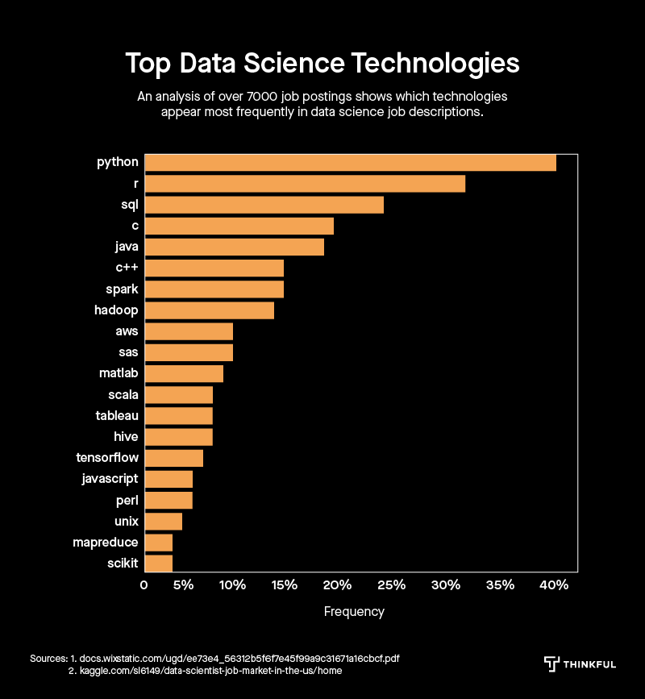
Fuente: https://www.thinkful.com/blog/insights-on-the-data-science-job-market-analyzing-7k-data-science-job-descriptions/
Primeros pasos para correr programas con Python¶
Descargando Python¶
La manera más fácil de obtener Python es descargarlo de Anaconda en https://www.anaconda.com/download/
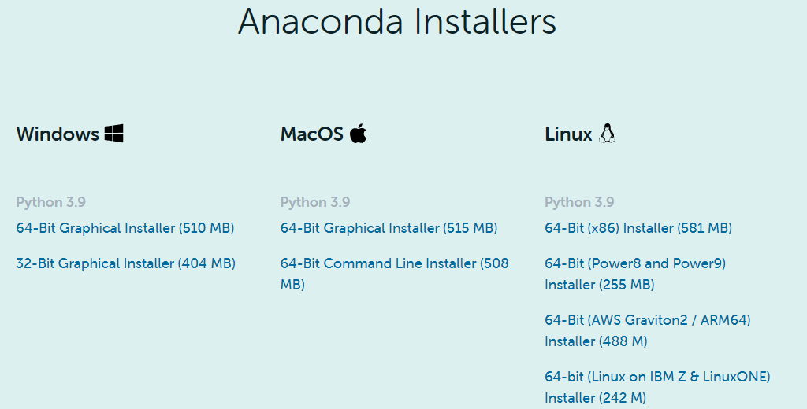
La versión más reciente disponible en Anaconda es la 3.9.
Ejecutando Python¶
Hay varias maneras de correr código de Python, dependiendo de lo que sea más conveniente en el momento. Muchas de las opciones pueden comenzarse desde Anaconda Navigator 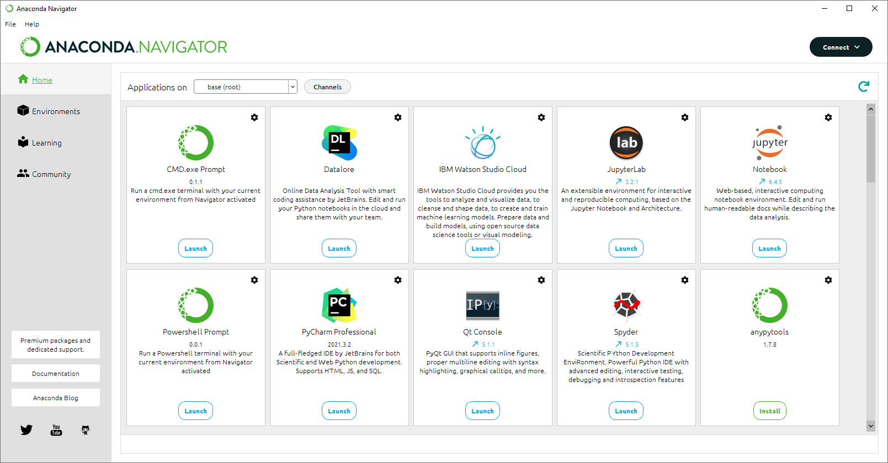
entre ellas:
en una terminal (command window)¶
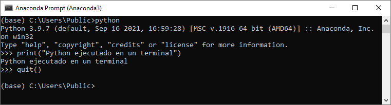
en Jupyter QtConsole¶
Es una GUI de PyQt GUI que permite tener figuras incrustadas, edición de muchas líneas con resaltado de sintaxis, pistas de ayuda gráficas, y más. 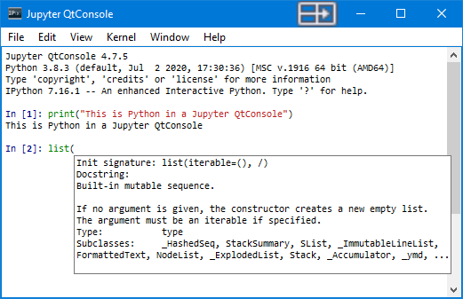
en Jupyter Notebook¶
Es un ambiente de cuaderno computable interactivo basado en la web. Se edita y ejecutan documentos legibles para humanos mientras que se describe el análisis de los datos. 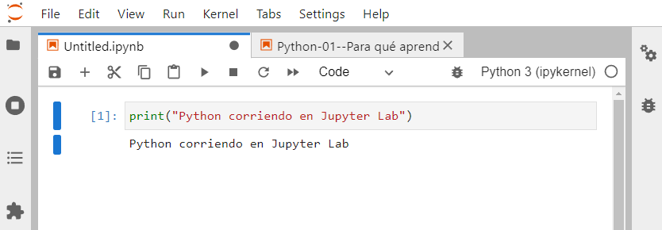
en Spyder¶
Scientific PYthon Development EnviRonment. Es una IDE poderosa, con edición avanzada, pruebas interactivas, correción y características de introspección. 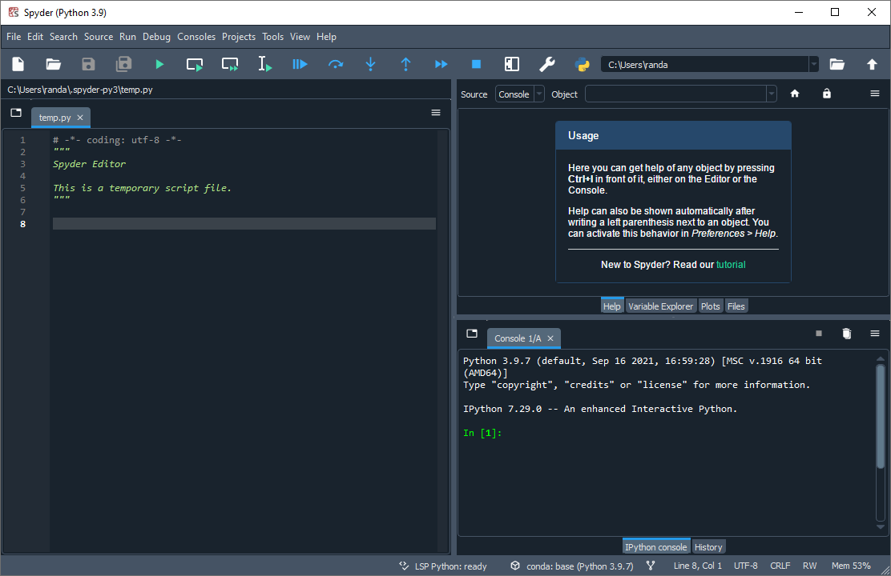
en nteract¶
nteract es una excelente opción para trabajar con cuadernos de Jupyter, pues puede abrirlos sin necesidad de abrir Jupyter previamente. Es gratuito y puede descargarse del sitio https://nteract.io/.
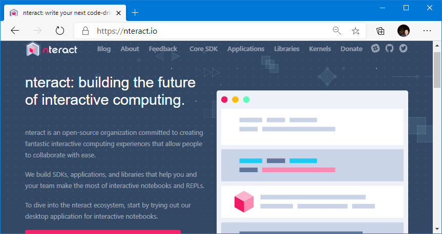
Ejecutando Python en la nube¶
Una opción muy conveniente para correr programas de Python sin instalarlo en su máquina es Google Colab, el cual permite ejecutarlos en los servidores de Google. A la fecha utiliza la versión 3.6.9 de Python.
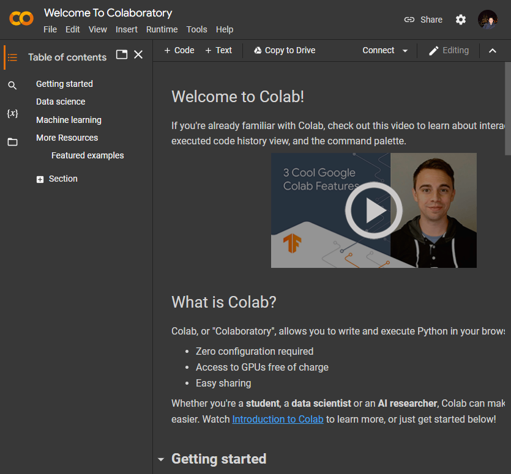
Por ejemplo, para ejecutar los cuadernos de Jupyter de este curso, puede cargarlos directamente desde mi repositorio de Github. Para ello, seleccione el menú File >> Open notebook >> Github, escriba randall-romero en el campo de búsqueda, y selecciones el repositorio EC4301.
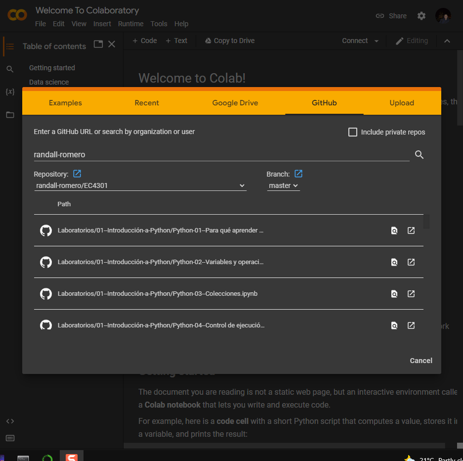